EMAIL · Address input field with automatic format check
What is an Email field?
- 1.1Adding a field and the property panel layout
1.1Adding a field and the property panel layout
Overview
Email (EMAIL) is an input box that collects an email address of a subject · guardian · staff member. Its key feature is that the format check is always on — unless the value has the shape of an address with @ and a dot, saving itself is rejected. This check is not a setting the form author can turn on or off; it is a property attached to the type.
Screen guide
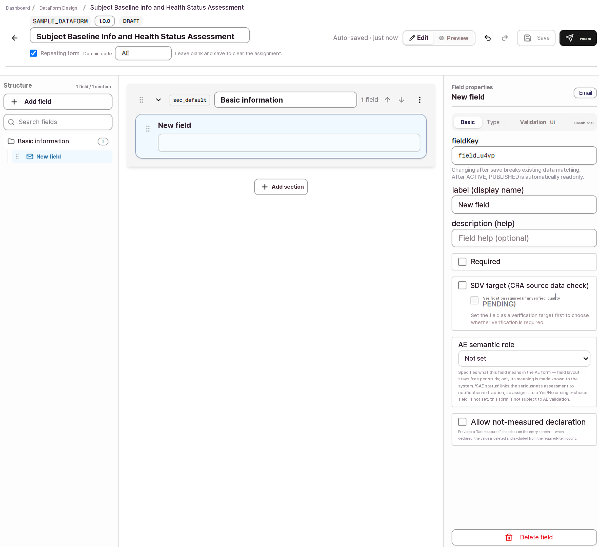
[+ Add field] — Specify the type here to create the field.
The new field is added to the structure tree. The icon is an envelope.
The input box appears on the WYSIWYG canvas. It is empty, with no hint text at all — unlike Phone, no default hint is filled in. If needed, add one in the UI tab. 5.4
fieldKey — The actual key under which the value is stored. 2.1
label (display name) · description (help) — The name and supporting description shown on screen. 2.1
Required · SDV target — Covered in 2.2 · 2.3.
AE semantic role — As the on-screen notice states, the valid targets are Yes/No or single-choice fields, so do not set it for this type.
Allow not-measured declaration — Covered in 2.4.
Type badge “Email” — The type of the selected field. It cannot be changed after the field is added.
5 property tabs — Basic · Type settings · Validation · UI · Conditional. Chapters 2–6 of this manual correspond to these tabs.
Precautions
Must check Data corruption · Form cannot be completed
- • ⛔ An email address is personal data. It leads directly to identifying the subject, so collect it only when truly necessary, and use conditional display so that subjects to whom it does not apply are not asked at all. Ch. 6
- • The type cannot be changed after the field is added, and after publishing (PUBLISH) the structure itself cannot be changed. If you chose the wrong type, delete the field and add it again.
Easily misunderstood behavior
- • The format check cannot be turned off. Neither the Type settings tab nor the Validation tab has an item to disable it — it is a property that comes with the type the moment you choose it. If you do not want to enforce the format, use the Single-line text type. 3.1
Basic tab — name · required · verification target · not measured
- 2.1fieldKey · display name · help
- 2.2Required
- 2.3SDV target (CRA source data check)
- 2.4Allow not-measured declaration
2.1fieldKey · display name · help
Overview
This area sets the field's names. The storage key (fieldKey) and the name shown on screen (label) are different values, and the point up to which each may be changed differs. For Email it must be clear whose address it is, so write a specific display name.
Screen guide
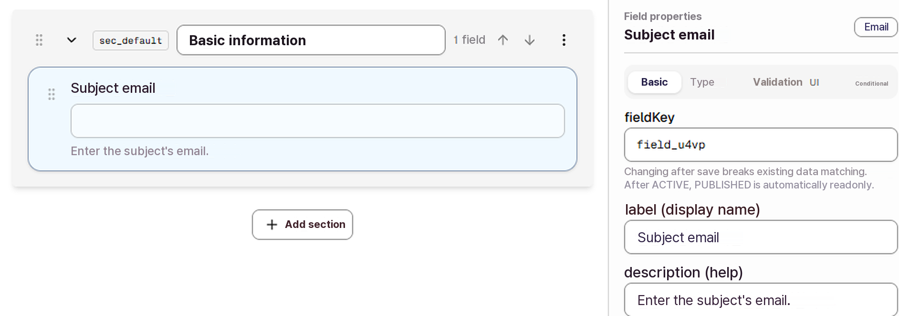
label (display name) — Enter the item name to show on the entry screen.
It is shown as the field title on the canvas.
description (help) — Enter a supporting description to show below the display name. If left blank, nothing is shown.
It is shown in gray text below the input box. The capture shows “Enter the subject's email.”
fieldKey — The actual key under which the value is stored. When you add a field, it is assigned automatically, like field_u4vp, and as the on-screen notice says, “Changing after save breaks existing data matching”.
Precautions
Must check Data corruption · Form cannot be completed
- • State in the display name whose address it is. With just “Email”, no one can tell whether it belongs to the subject, a guardian or the investigator in charge, so addresses of different people get mixed in the same field.
- • State in the help what the address is used for. The address a subject gives depends on whether it is for result notifications or schedule reminders — work and personal addresses usually differ.
- • Do not change fieldKey after saving. The link to data already entered is broken, and the validation rules 4.3 and conditional display Ch. 6 that reference this field break as well.
Easily misunderstood behavior
- • The display name (label) can be changed at any time. It does not affect stored values.
2.2Required
Overview
Sets whether this field must be filled in before the form can be completed. Email is an item that some people do not have and some do not want to give, so before making it required, decide first how such cases will be recorded. 2.4
Screen guide
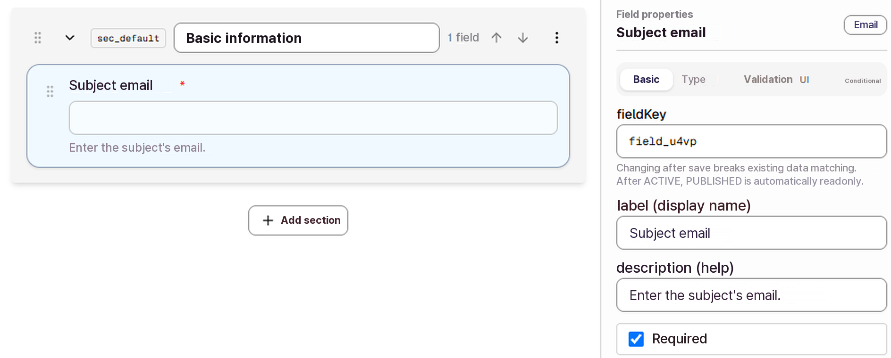
* next to the display name on the canvasRequired — When selected, this field becomes a required item.
A red * appears to the right of the display name on the canvas.
label · description — The values entered in 2.1 are shown as is.
Precautions
Must check Data corruption · Form cannot be completed
- • ⛔ If Email is required, recorders end up filling in an arbitrary address. Cases with no address, such as elderly subjects, are in fact common — if you make it required, be sure to also turn on the not-measured declaration 2.4.
- • Hidden fields are excluded from the required check. While hidden by conditional display Ch. 6, the form is completed with the field empty even if it is required.
Easily misunderstood behavior
- • Required and the format check are different checks. Required only checks that the value is not empty; the format check only checks that its shape is correct. Empty values skip the format check, so if you want both, you must also set Required. 4.1
Note
- • If the not-measured declaration is on and the recorder declares it, the form can be completed even if the item is required. 2.4
2.3SDV target (CRA source data check)
Overview
SDV (Source Data Verification) is the procedure in which the clinical research associate (CRA) checks entered values against the site's source data. Here you decide whether this field is a target of that procedure. This setting is the same for all field types, so the screen is also the same regardless of type.
Screen guide
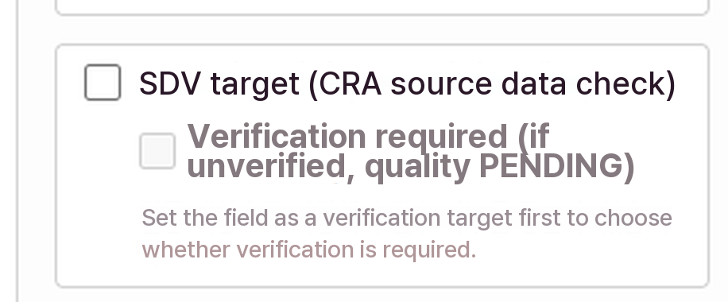

SDV target (CRA source data check) — When selected, this field is included in the CRA's check list.
When it becomes selected, the sub-item is enabled.
Verification required (if unverified, quality PENDING) — Can be set only after ① is selected. When selected, the quality status of the data stays at PENDING until the CRA finishes the check.
Before ① is selected, ② is grayed out and disabled. As the on-screen notice says, “Set the field as a verification target first to choose whether verification is required.”
Precautions
Must check Data corruption · Form cannot be completed
- • ⛔ Passing the format check does not mean the check against source data is done. The system looks only at the shape, so an address with a typo also passes — whether the address actually exists can be known only when the CRA checks it against the source data. 4.1
- • Changing the value cancels the verification. If you correct the address, the quality status goes back to PENDING and the CRA must check it again.
Easily misunderstood behavior
- • SDV cannot be performed by the person who entered the data. The system enforces cross-verification (Cross-User SoD), so the person entering and the person verifying must be different.
Note
- • The quality status progresses in the order PENDING → VERIFIED → CLEAN. If even one field marked verification required is unverified, the data cannot become CLEAN.
2.4Allow not-measured declaration
Overview
This feature records cases where the answer cannot be confirmed as a distinct value. For Email, “not asked yet” and “asked, but has no address” are completely different situations, yet a blank field cannot tell them apart — this declaration separates the two.
Screen guide

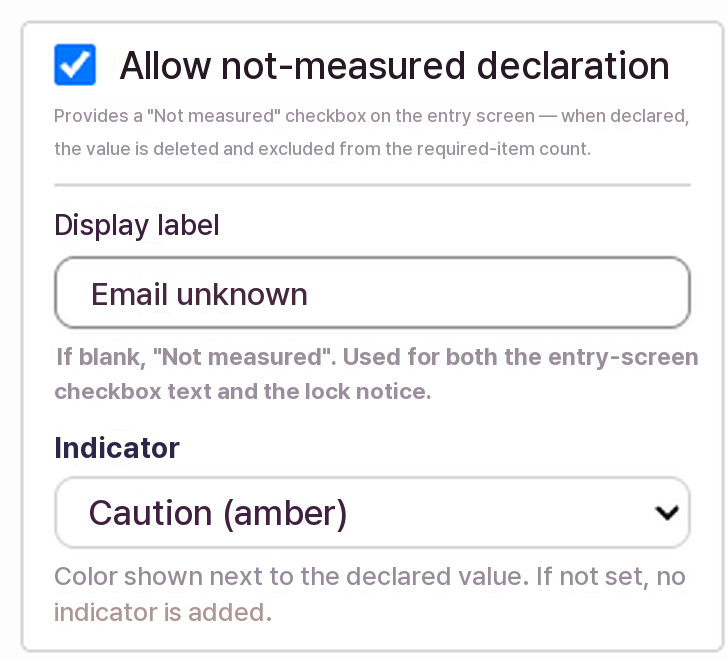
Allow not-measured declaration — When selected, a “Not measured” checkbox is created on the entry screen and the two items below appear.
Display label — If left blank, the default “Not measured” is used.
If you change it to Email unknown, this text is applied to both the entry-screen checkbox and the lock notice.
Indicator — The default is None.
If you change it to Caution (amber), a mark in that color appears next to the declared value.
Precautions
Must check Data corruption · Form cannot be completed
- • ⛔ Email especially needs this declaration. If it is not turned on, recorders fill in fake addresses such as
none@none.com, and because that value passes the format check, it is caught nowhere. 4.1 - • Declaring deletes the value. As the on-screen notice says — “When declared, the value is deleted and excluded from the required-item count.”
Easily misunderstood behavior
- • Declared fields are excluded from the required-item count. Therefore the form can be completed even if the item is required.
Note
- • If no indicator is set, no color mark is applied. If emphasis is needed, select Caution (amber) or another option.
Type settings tab — a type with no type-specific settings
- 3.1Type settings tab layout
- 3.2Default value (defaultValue)
3.1Overall layout
Overview
Email is a type with no type-specific settings. This is because there is no format to choose — the check rule is already fixed and always applied. So this tab contains only one line of notice stating that fact, plus the two items common to all types.
Screen guide
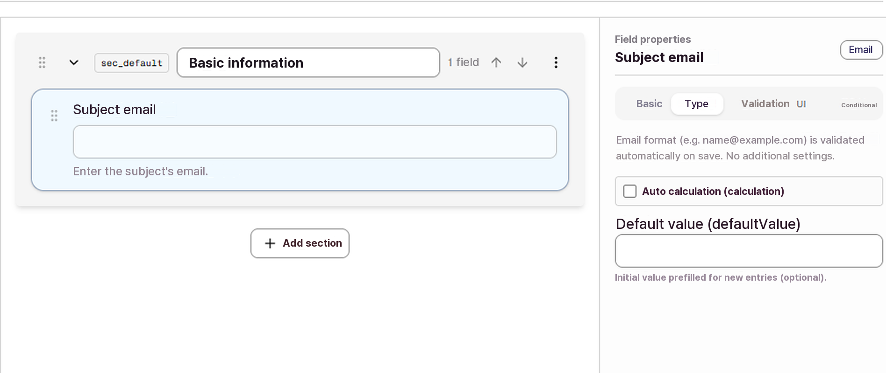
Default value (defaultValue) — The address prefilled for new entries. It is empty at first. 3.2
On-screen notice — “Email format (e.g. name@example.com) is validated automatically on save. No additional settings.” Items such as allowed domains · length cannot be specified.
Auto calculation (calculation) — The item is shown, but it is not used for this type, because there is no reason to derive an address from a formula.
Type badge “Email” — The type of the field being configured.
Property tabs — Currently the Type settings tab.
Precautions
Must check Data corruption · Form cannot be completed
- • ⛔ You cannot restrict input to specific domains. If only institutional email may be accepted, you must create a separate rule with Format (regex) in the Validation tab. 4.2
- • If you do not want to enforce the format, do not use this type. There is no way to turn the check off, so create items that must accept free input as Single-line text. 1.1
Easily misunderstood behavior
- • The format check is performed by the system and cannot be turned off. A value passes if there are characters before and after
@and a dot in the part after it. It is not an item the form author can adjust. - • There is no length limit either. Unlike Single-line text, no item is provided for specifying a maximum number of characters.
3.2Default value (defaultValue)
Overview
Sets the address to prefill for new entries. It is empty at first. Unlike other types, it can be checked right on the edit screen — the value appears in the canvas input box without going to Preview.
Screen guide
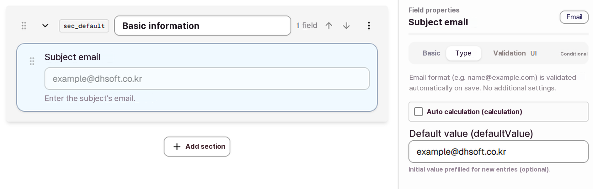
Default value (defaultValue) — Enter the address to prefill. The capture shows example@dhsoft.co.kr.
That address is shown as is in the canvas input box. Unlike True/False · Single choice, you can check it without going to [Preview].
Auto calculation (calculation) — Not used for this type. 3.1
Precautions
Must check Data corruption · Form cannot be completed
- • ⛔ Do not set a default value for Email. An address is filled in even if the recorder does not check it, so someone else's address may be saved. In clinical trial data this is not a simple typo but an incident in which personal data is recorded incorrectly. 1.1
- • ⛔ Setting an example address as the default value is especially dangerous. A value such as
example@dhsoft.co.krpasses the format check, so it is caught nowhere and saved as is. Leave it empty whenever possible. - • A field with a default value passes the required check even if the recorder never touches it. Take particular care when using it together with Required 2.2.
Easily misunderstood behavior
- • If you only want to give guidance, use a placeholder instead of a default value. A placeholder appears only as faint text and is not saved. 5.4
Validation tab — checking values before saving
- 4.1No validation rules
- 4.2Adding a rule
- 4.3Completed rule — Compare with another field
4.1No validation rules
Overview
This tab collects rules that check whether a value meets conditions before saving. For Email, the format check already applies even if you create no rules — use this tab to add a domain restriction 4.2 or a relationship with another field 4.3 on top of it.
Screen guide
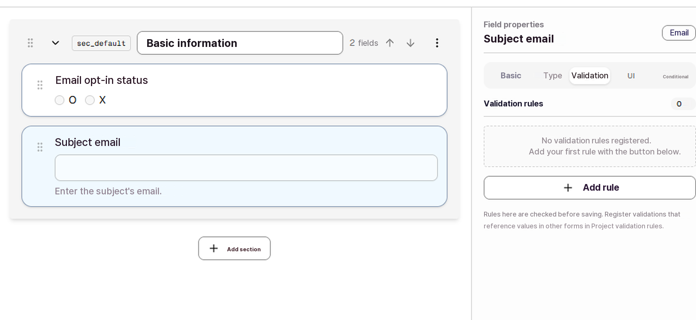
[+ Add rule] — Creates the first rule. The screen after selecting it is explained in 4.2.
The Validation rules area and the registered rule count. At first it is 0 items. The format check still works.
When there are no rules, the notice “No validation rules registered. Add your first rule with the button below.” is shown.
Notice at the bottom — “Rules here are checked before saving. Register validations that reference values in other forms in Project validation rules.”
Precautions
Must check Data corruption · Form cannot be completed
- • ⛔ The format check looks only at the shape. A short value like
a@b.cand an address with a typo both pass. The system cannot know whether the address actually exists, so a person must check it at the SDV stage. 2.3 - • ⛔ Validations that reference values in other forms cannot be created here. Register such rules on the “Project validation rules” screen.
Easily misunderstood behavior
- • Empty values skip the format check. A state with nothing entered is not checked; preventing missing input is the job of Required 2.2.
- • The capture has two fields: “Email opt-in status” (Single choice) and “Subject email” — whether the second may be entered depends on the answer to the first, so in 4.3 you create a rule that links the two fields.
4.2Adding a rule
Overview
Selecting [+ Add rule] in 4.1 creates a Rule 1 block. At first it is set to “Value range”, but Email is a string, not a number, so a size comparison makes no sense — you must change it to “Format (regex)” or “Compare with another field”.
Screen guide
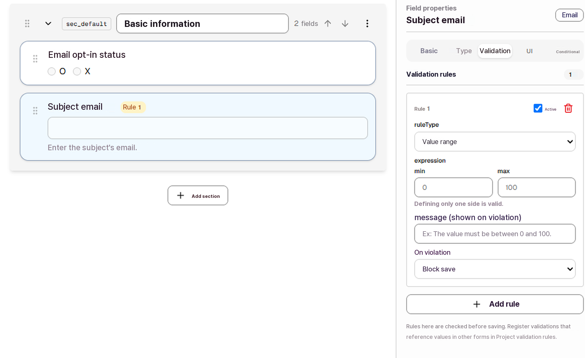
[+ Add rule] — Creates one more rule. (It is the same button you selected in 4.1.)
A “Rule 1” badge appears next to the display name on the canvas.
The number of rules changes to 1 item.
Active checkbox and Delete icon — You can pause a rule without deleting it.
ruleType — The type of rule. Right after creation it is “Value range”, so change it to the rule you want to use.
min — The lower-limit box that appears when Value range is chosen.
max — The upper-limit box that appears under the same condition.
message (shown on violation) — The message shown to users when the rule is violated.
On violation — Select either Block save or Warning. (Depending on ruleType, it may not be selectable — 4.3)
The faint 0 · 100 and “Defining only one side is valid.” are guidance for Value range, not set values.
Precautions
Must check Data corruption · Form cannot be completed
- • ⛔ A regex is added on top of the built-in format check. Even if you write it loosely, the built-in check still applies, so values with a broken format do not pass. Conversely, if you narrow it incorrectly, valid addresses are blocked too, so always check it in Preview.
- • ⛔ Do not use “Value range” · “Decimal places”. Email is a string, so neither size nor decimal places make sense. The screen still lets you choose them, so the form author must filter them out.
- • If message is left blank, users cannot tell why saving was blocked. Be sure to enter it.
Easily misunderstood behavior
- • To restrict domains, use “Format (regex)”. If only institutional email may be accepted, write an expression that specifies the ending, like
@example\.ac\.kr$— the Type settings tab has no such item. 3.1
4.3Completed rule — Compare with another field
Overview
If you change ruleType to Compare with another field, the value is checked against the value of another field in the same form. You can express relationships in which whether input is allowed depends on the answer to an earlier question, such as “collect the address only if the subject opted in”.
Screen guide
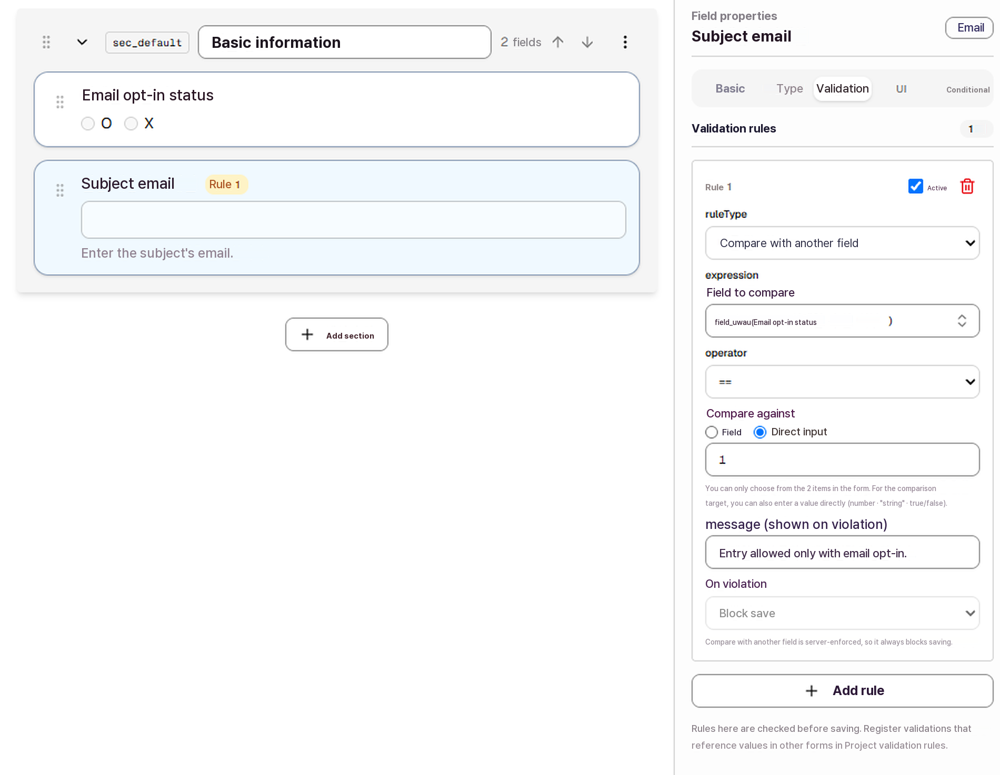
1ruleType = Compare with another field — When selected, the boxes below change for comparison.
Field to compare — Select another field in the same form. The capture shows field_uwau(Email opt-in status), a Single choice field.
operator — The comparison method. The capture shows == (equals).
Compare against — Choose between Field and Direct input. In the capture, 1 is entered as direct input — the stored value of “Email opt-in status”.
message (shown on violation) — The capture shows Entry allowed only with email opt-in.
On violation — Grayed out and disabled. As the on-screen notice says, “Compare with another field is server-enforced, so it always blocks saving.” — for this rule, Warning cannot be chosen and it is fixed to Block save.
On-screen notice — “You can only choose from the 2 items in the form. For the comparison target, you can also enter a value directly (number · "string" · true/false).”
Precautions
Must check Data corruption · Form cannot be completed
- • ⛔ For the comparison target, enter the stored value, not the text shown on screen. In the capture, “Email opt-in status” appears on screen as
O·X, but the stored value is1. Check it first in the option list of the field you reference. - • ⛔ Link opt-in consent and address collection as a pair. If the address of a subject who did not consent remains, personal data is being kept without a basis — this rule is the safeguard that prevents it. Ch. 6
Easily misunderstood behavior
- • This rule cannot be set to Warning. Use it only for relationships that must be blocked. If you only want to inform, it is better not to ask at all by using conditional display Ch. 6.
- • If this field is empty, the rule is not checked. Preventing missing input is the job of Required 2.2.
UI tab — screen layout and guidance text
- 5.1UI tab layout
- 5.2Layout width
- 5.3Read-only · hidden
- 5.4placeholder · helpText
5.1Overall layout
Overview
This tab sets how the field is laid out and guided on screen, not the value itself. Settings in this tab do not change the stored data itself. Email is a type with no default hint text, so if you set a placeholder, recorders can see right away what form to write the address in. 5.4
Screen guide
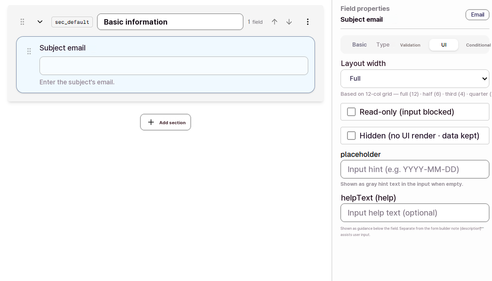
Layout width — The width this field takes up in one row of the form. 5.2
Read-only (input blocked) — Shows the field but prevents changes. 5.3
Hidden (no UI render · data kept) — Hides the field from the screen. 5.3
placeholder — Faint hint text inside the input box. If not set, nothing is shown. 5.4
helpText (help) — Guidance text shown below the field. 5.4
Type badge “Email”
Precautions
Must check Data corruption · Form cannot be completed
- • ⛔ Hiding does not delete the stored address. It is hidden only on screen; the value remains and is included in data extraction and the audit trail. 5.3
Easily misunderstood behavior
- • If the placeholder is left empty, the input box looks completely empty. Phone has
010-0000-0000by default, but Email has no default text. 1.1 · 5.4 - • Settings in this tab do not change stored values. Only the layout and guidance change.
Note
- • Do not use Read-only and Hidden together. Hidden takes precedence, so the Read-only setting has no effect. 5.3
5.2Layout width
Overview
Sets the width this field takes up in a form row. An email address is a value whose length cannot be predicted, so if you narrow the width, the end of a long address cannot be seen.
Screen guide
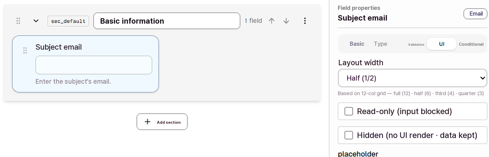
Layout width — Select from Full · Half (1/2) · 1/3 · 1/4.
The canvas input box shrinks to half width. Other fields are placed in the remaining space on the same row.
Based on 12-col grid — As the on-screen notice says, “full (12) · half (6) · third (4) · quarter (3)”.
Precautions
Must check Data corruption · Form cannot be completed
- • ⛔ Do not narrow it to 1/3 · 1/4. Email addresses can be long, so the beginning scrolls out of view while typing — typos cannot be checked.
Easily misunderstood behavior
- • Full width is recommended. Unlike Phone, the length is not fixed. 5.1
- • Half is workable. However, if addresses with long domains, such as institutional email, are expected, use full width.
Note
- • If not set, full width is applied.
5.3Read-only · hidden
Overview
These settings show the field but prevent changes, or hide it from the screen while keeping its value. Neither deletes the stored address.
Screen guide
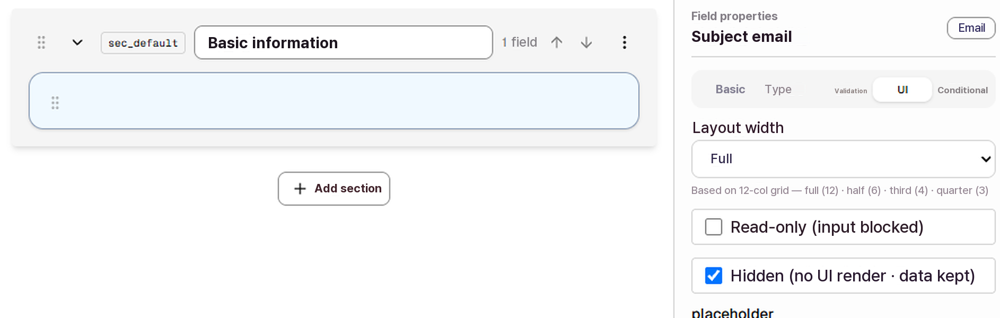
Read-only (input blocked) — When selected, the address is shown, but the recorder cannot correct it.
Hidden (no UI render · data kept) — When selected, this field is not shown on the entry screen.
Only an empty border remains of the canvas card. Neither the display name nor the input box is shown.
Layout width — The value set in 5.2.
Precautions
Must check Data corruption · Form cannot be completed
- • ⛔ Do not use Hidden to cover addresses whose opt-in consent was withdrawn. The value remains and is included in data extraction and the audit trail — if an address must not be kept, delete the value instead of hiding it. 4.3
- • ⛔ Do not use Hidden to cover incorrectly entered addresses either. If someone else's address was entered, you must correct the value. 1.1
Easily misunderstood behavior
- • Use Read-only for addresses imported from elsewhere. Do not use it for items the recorder must take down directly.
- • To hide the field depending on a condition, use conditional display. Hidden in this tab always hides the field. Ch. 6
5.4placeholder · helpText
Overview
Sets the guidance text shown inside and below the input box. Email is a type in which both positions work normally, and since there is no default text, if both are left empty, no guidance is shown at all. It is best to fill in at least one.
Screen guide
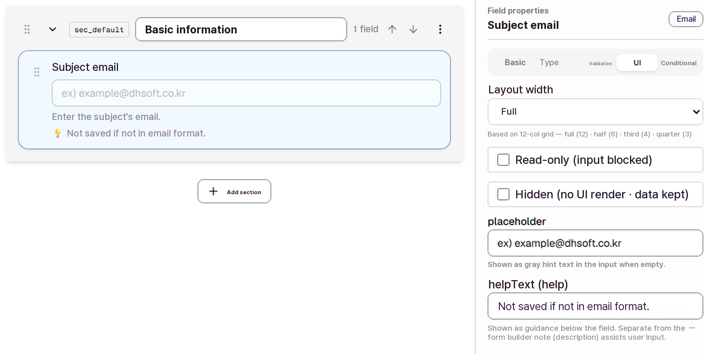
placeholder — Faint text shown in the input box when there is no value. The capture shows ex) example@dhsoft.co.kr.
The text appears in faint type in the canvas input box. It is not a value, so it is not saved.
helpText (help) — Guidance text shown below the field. The capture shows “Not saved if not in email format.”
It is shown below the input box with a 💡 icon.
description (help) — The text entered in 2.1. It is a different item from helpText and is shown without an icon.
Precautions
Must check Data corruption · Form cannot be completed
- • Put an example address in the placeholder. Email has no default hint, so if it is left empty the input box looks completely empty. Prefixing it with
ex), as in the capture, lets recorders see right away that it is an example. 1.1 - • ⛔ Do not confuse the placeholder with the default value. A placeholder appears only as faint text and is not saved, whereas a default value is actually saved. If you want to show an example address, always write it in the placeholder. 3.2
Easily misunderstood behavior
- • The helpText in the capture is accurate. If the format is wrong, saving is actually rejected, so “Not saved if not in email format.” is correct guidance. 4.1
- • description and helpText are shown together. If you enter both, they make two lines, so do not write the same content twice. 2.1
Conditional tab — showing a field based on another value
- 6.1Enabling conditional display
- 6.2Setting the condition
6.1Enabling conditional display
Overview
This feature shows or hides this field depending on the value of another field. It is especially well suited to Email — if subjects who did not opt in are not asked for an address at all, personal data is not collected without a basis.
Screen guide
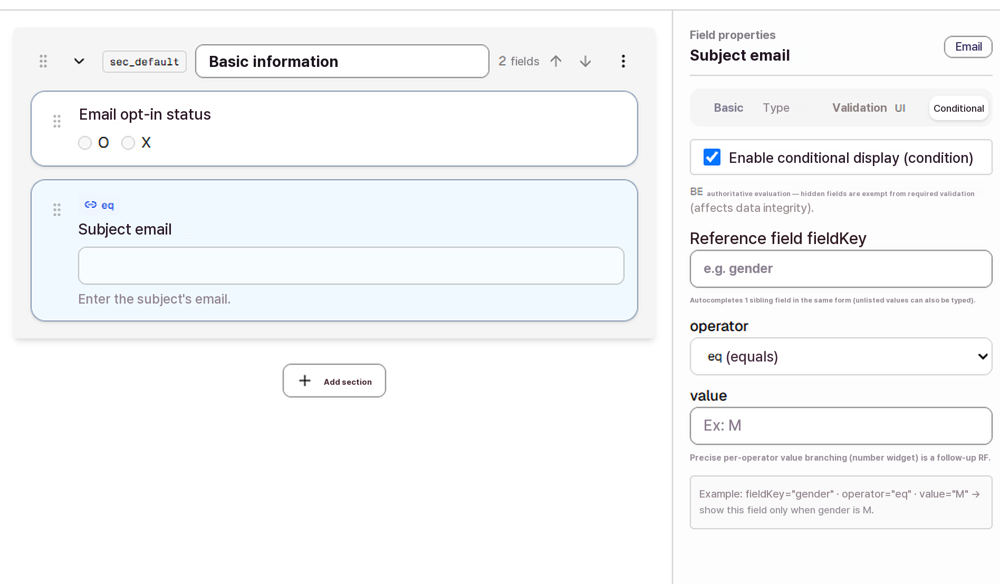
Enable conditional display (condition) — When selected, the condition settings below appear.
A 🔗 eq badge appears above the field on the canvas to show that a condition is applied.
Reference field fieldKey — Another field in the same form on which the condition is based. Sibling fields in the same form are autocompleted, and you can also type a value not in the list.
operator — The comparison method. The default is eq (equals).
value — The value to compare. Enter the stored value of the reference field. 6.2
⚠ On-screen notice — “Hidden fields are exempt from required validation (affects data integrity).” The condition is evaluated by the system.
Example at the bottom — fieldKey="gender" · operator="eq" · value="M" → show this field only when gender is M.
Precautions
Must check Data corruption · Form cannot be completed
- • ⛔ Setting a condition exempts the field from required validation. While it is hidden because the condition is not met, the form is completed with the field empty even if it is required.
- • ⛔ If the condition becomes false after a value has been entered, the address disappears from the screen. The value itself remains, so if opt-in consent is withdrawn later, the remaining address must be deleted separately. 5.3
Easily misunderstood behavior
- • The principle is to ask for personal data only when necessary. If you link opt-in consent and address input with a condition, addresses of subjects who did not consent never come in to begin with. 4.3
Note
- • If you enable the condition and leave the reference field blank, the condition is never met. Be sure to fill in all of ②–④. 6.2
6.2Setting the condition
Overview
This is the state with the condition enabled in 6.1 filled in completely. With this setting, the address input box is shown on screen only when the value of the “Email opt-in status” field is 1. The reference field is Single choice, so its stored value is a string, and writing that value as is in the value box makes the condition work correctly.
Screen guide
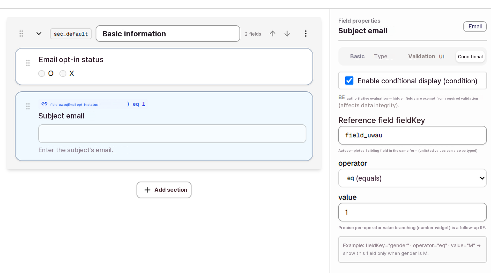
Email opt-in status is 1Reference field fieldKey = field_uwau — Points to the “Email opt-in status” field in the same form.
Result of filling in all of ①–③ — the canvas badge becomes 🔗 field_uwau(Email opt-in status) eq 1.
operator = eq (equals)
value = 1 — Enter the stored value of the option, not the O shown on screen.
⚠ On-screen notice — “Hidden fields are exempt from required validation (affects data integrity).”
Example at the bottom — fieldKey="gender" · operator="eq" · value="M" → show this field only when gender is M.
Precautions
Must check Data corruption · Form cannot be completed
- • ⛔ In value, enter the stored value, not the screen text. If you write
O, the condition is never met and the address field is never shown. Check the stored value first in the option list of the field you reference. - • ⛔ Changing the stored value of the reference field silently breaks the condition. If the stored value is changed from
1toY, this condition simply stops being met without any error — that is why changing stored values after publishing is risky. - • The same relationship can also be created as a validation rule 4.3. Applying both creates a redundancy that both skips the question and blocks saving, so use only one of them.
Easily misunderstood behavior
- • After setting it, check it in Preview. You must change the reference value back and forth and confirm that the input box actually appears and disappears.
Appendix
- 7.1Settings by tab at a glance
- 7.2Must remember · not covered
7.1Settings by tab at a glance
Settings by tab
| Tab | Item | What it sets | Section |
|---|---|---|---|
| Basic | fieldKey | The actual key under which the value is stored (do not change after saving) | 2.1 |
| label (display name) | Item name shown on screen — state whose address it is | 2.1 | |
| description (help) | Supporting description below the input box — what the address is used for | 2.1 | |
| Required | Whether input is mandatory (a check separate from the format) | 2.2 | |
| SDV target | Whether it is a CRA source data check target (a person confirms whether it actually exists) | 2.3 | |
| AE semantic role | This type is not a valid target | 1.1 | |
| Allow not-measured declaration | A way to record “no address” — especially needed for this type | 2.4 | |
| Type settings | (Type-specific settings) | None — the format check is always on | 3.1 |
| Default value (defaultValue) | Address to prefill (leave empty whenever possible · visible right on the canvas) | 3.2 | |
| Validation | ruleType | Kind of rule — Format (regex) or Compare with another field | 4.2 · 4.3 |
| expression | Conditions added on top of the built-in check, such as a domain restriction (e.g. @example\.ac\.kr$) | 4.2 | |
| message | Message shown to users on violation — never leave blank | 4.2 · 4.3 | |
| On violation · Active | Compare with another field is fixed to Block save · rule active · inactive | 4.3 | |
| UI | Layout width | Width on the 12-col grid (Full recommended · addresses can be long) | 5.2 |
| Read-only | Shown but cannot be corrected | 5.3 | |
| Hidden | Not shown on screen (the stored address remains) | 5.3 | |
| placeholder · helpText | Both work normally — there is no default text, so fill in at least one | 5.4 | |
| Conditional | Condition active | Whether conditional display is used (exempt from required validation) | 6.1 |
| Reference field fieldKey | Field in the same form on which the condition is based | 6.2 | |
| operator · value | Comparison method and value to compare (enter the stored value) | 6.2 |
Differences from the Phone type
| Item | Phone | |
|---|---|---|
| Format check | None — saved even if digits are missing | Always applied — saving is rejected if the shape is wrong 4.1 |
| Auto-conversion while typing | Hyphens are added automatically | None — saved exactly as typed |
| Default placeholder | 010-0000-0000 is filled in | None — completely blank if left empty 5.4 |
| Layout width | Safe up to Half (the length is fixed) | Full recommended — the length cannot be predicted 5.2 |
7.2Must remember · not covered
Must remember
Must check Data corruption · Form cannot be completed
- • The format check looks only at the shape.
a@b.cand addresses with typos both pass — whether the address actually exists must be checked by a person at the SDV stage. 2.3 · 4.1 - • An email address is personal data. Link it to opt-in consent and ask for it conditionally, and delete the value if consent is withdrawn. 4.3 · 5.3 · 6.1
- • Do not set a default value. An example address passes the format check, so it is caught nowhere and saved as is. To show an example, use a placeholder. 3.2 · 5.4
- • If you make it required, also turn on the not-measured declaration. Otherwise recorders fill in fake addresses. 2.2 · 2.4
- • Narrowing a regex incorrectly blocks valid addresses too. It is added on top of the built-in check, so keep it loose and check in Preview. 4.2
- • Do not use 1/3 · 1/4 width. Addresses are long, so the beginning scrolls out of view while typing. 5.2
Easily misunderstood behavior
- • The format check cannot be turned off. For items that must accept free input, use Single-line text instead of this type. 1.1 · 3.1
- • Empty values skip the format check. Preventing missing input is the job of Required. 2.2 · 4.1
- • There is no default hint text. If the placeholder is left empty, the input box looks completely empty. 5.4
Note
- • The default value is visible right on the edit screen. Unlike True/False · Single choice, there is no need to go to Preview. 3.2
Not covered in this document
※ Specifying allowed domains — The Type settings tab has no such item. If only institutional email may be accepted, create a separate rule with Format (regex) in the Validation tab. 3.1 · 4.2
Length limit — Unlike Single-line text, there is no item for specifying a maximum number of characters. 3.1
Disabling the format check — There is no item anywhere to turn it off. It is a property attached to the type. 1.1
Auto calculation (calculation) — The item is shown in the Type settings tab, but it is not used for this type. It derives values from a formula, so use it with the Number type. 3.1
AE semantic role — The item exists in the Basic tab, but this type is not a valid target. Assign it to Yes/No or single-choice fields. 1.1
Sending email — This field only records the address; sending notifications is the domain of a separate feature.